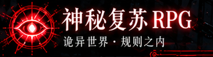
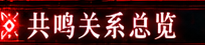

⌕
全部类型
共鸣连接
冲突关系
未知线索
全部状态
核心
已启用
未启用
冲突
研究中
未解锁
返回
↻
血色的联系，是这个世界最真实的规则。
第四步 · 当前游戏存档 · 能力未自动解锁
以我为核，万鬼相引。
那些交织的关系，构成了通往更高之处的道路。
↻ 全图
已有关联
已观察冲突
未验证关系
全图定位
−
100%
＋
拖拽
核心
复位
拖拽浏览 · 滚轮 / 双指缩放 · 交叉处可选关系

全部谱系
共鸣
冲突
未知线索